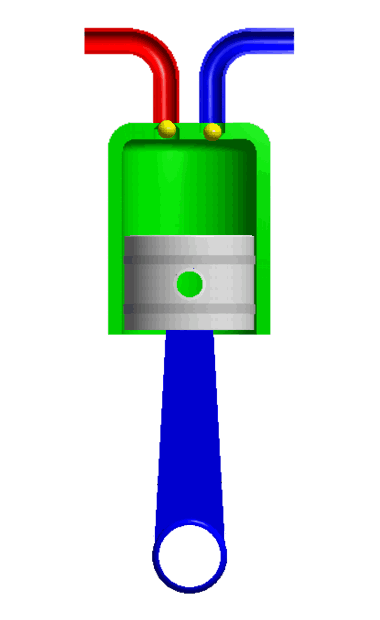
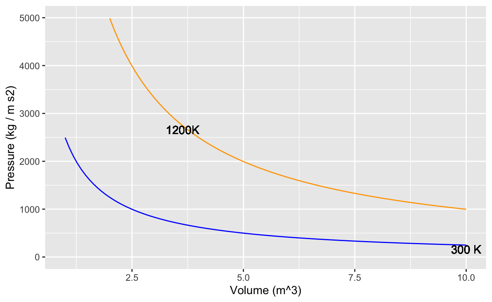

In the 1660s, John Boyle made use of then-new instrumentation to measure gas pressure. He discovered what’s now called Boyle’s Law, which says that, at constant temperature in a closed system, pressure times volume is a constant:
\[PV = const\] In the 1720s, Daniel Fahrenheit developed the first reliable thermometer consisting of a column of mercury in a glass straw. He developed a temperature scale which divided the range from freezing to boiling into 180 small units, which he called “degrees,” as was traditional in measuring angles. (In 1742, Anders Celsius created another scale with freezing at 0 and 100 small units—still called “degrees”—between freezing and boiling.
With the availability of reliable thermometers, scientists started to consider the role of temperature in the relationship between pressure and volume. Their many discoveries were eventually synthesized into a “combined gas law” and then into an “ideal gas law” which famously states: \[PV = nRT .\] Here, \(n\) is “amount” of gas, quantified as the number of moles of the gas in the container, \(T\) is temperature, and \(R\) is the “ideal gas constant”: \[R = 8.314 \mbox{J}/(\mbox{K}\ \mbox{mol})\] The “mol” cancels out the dimension of \(n\), the \(K\) cancels out the dimension of \(T\), leaving us with \(PV\) having the dimension of energy (Joules). The temperature \(T\) is measured in degrees Kelvin, which is just like Celsius but moving the location of 0 from freezing to … well … the hypothetical temperature when \(PV=0\), which can be estimated by extrapolating measurements of \(PV(T)\) (that is, \(PV\) as a function of \(T\)) to the \(T\) where \(PV = 0\).
For use in calculus, it’s helpful to re-write the Ideal Gas Law in functional form. There are several ways to do this. For instance, if we wanted to measure the number of moles of gas in a container, we could use the function \(n(P, V, T) = PV/RT\). Here, we’re going to focus on pressure as a function of the other quantities: \[P(n, V, T) = nRT/V.\] Now consider a very simple machine consisting of a cylinder, closed on one end and sealed by a movable piston at the other, as in this picture.

Source: R. Castelnuovo - Own work, CC BY-SA 3.0
The machine in the picture is more complicated than the simple machine we want to model. The picture includes two small valves at the top of the cylinder connected each to a pipe.
Our machine has no valves and no pipes. The cylinder is charged with gas when it is manufactured. After that, nothing material goes in or out of the closed cylinder/piston system.
When you push on the cylinder, the volume available for the gas gets smaller and the pressure increases. When you let the cylinder push on you, the volume available gets bigger and the pressure decreases. The amount of gas, \(n\), never changes. For simplicity, we’ll imagine that \(n=1\) and that the gas is N\(_2\). This means the mass of the gas is 0.028 kg.
And, to simplify even more, let’s insist that the temperature of the cylinder and its gaseous content does not change from room temperature: 293\(^\circ\) Kelvin.

If you start in a high-volume, low-pressure state and push the piston to move to a low-volume, high-pressure state at the same temperature, you will be putting energy into the machine.
The “area” of each little box in the graph, that is, pressure times volume,
Now that you have compressed the gas in the cylinder, by doing work on it, let’s heat up the machine to 1200K.
The net work done by the machine in completing the cycle, shifting from compression at low temperature to expansion at high temperature, is the difference between the energy put out by the machine when expanding and the energy put into the machine to compress the gas. Such a machine is called a “heat engine” since it turns a source of high temperature and a source of low temperature into energy.
In the sandbox, you have been given a function \(P(V, T)\) with default \(n=1\) mole of gas. Anti-differentiate \(P()\) with respect to \(V\) then calculate the energy needed to compress the cylinder at the low temperature, that is \[\int_{7.5}^{2.5} P(V, T=300) dV .\] Call this numerical result compress_energy.
Similarly, calculate the energy done by the machine in the high-temperature expansion \[\int_{2.5}^{7.5} P(V, T=1200) dV .\] Call this numerical result expand_energy.
You may want to make a graph of your \(P(V, T)\) function to check that it is right. Also, check that the integrals are right by comparing them to the rough estimate you made earlier by counting squares.
P <- makeFun( n*8.314*T/V ~ V + T, n=1)
antiP <- makeFun(n*8.314*T*log(V) ~ V + T, n=1)
compress_energy <- ... evaluate antiP appropriately
expand_energy <- ... ditto
compress_energy # prints out the values
expand_energy# myP <- makeFun(n*R*T/V ~ V & T, R = 8.314, n = 1, T = 293)
grade_result(
#pass_if( ~ compress_energy < 0, message = "It was negative"),
fail_if( ~ ! abs(abs(compress_energy) - 2740)<1, message="Are you sure you set the temperature to 300K and integrated from V = 7.5 to 2.5?"),
fail_if( ~ ! abs(abs(expand_energy) - 10960)<1, message="Are you sure you set the temperature to 1200K and integrated from V = 2.5 to 7.5?"),
pass_if( ~ TRUE)
)